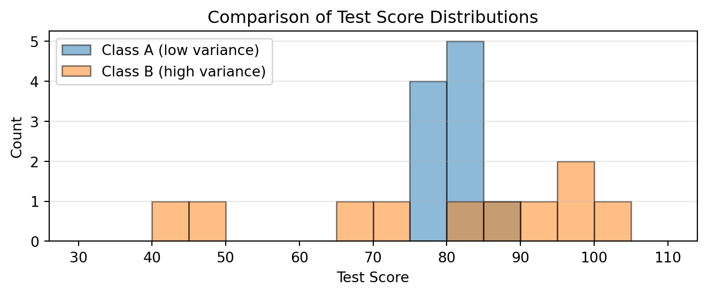

These notes are designed to be an accessible companion to the course, providing multiple perspectives on statistical concepts for students with diverse backgrounds.
Note
Please refer to the official Course Description and Moodle page for specific information about current implementations of the course.
About These Notes
These lecture notes complement the main course textbook, All of Statistics by Larry Wasserman; Wasserman (2013). While Wasserman’s book provides a comprehensive and rigorous treatment, these notes aim to:
Include extensive code examples in Python (and occasionally R)
Bridge prerequisite gaps for students from different backgrounds
Formats and Feedback
These notes are available in two formats:
HTML (recommended): Interactive version with tabs, code folding, and better navigation.
PDF: Traditional document format for printing or offline reading.
The content is almost identical in both formats. The PDF version is automatically generated from the source using Quarto’s LaTeX conversion and we are aware it contains some formatting artifacts (e.g., additional page breaks), but this should not affect readability. Interactive code elements and end-of-chapter code blocks are not included in the PDF version. The HTML version of the notes is the officially recommended version.
Your Feedback is Welcome!
These lecture notes are new and under active development. We welcome feedback, corrections, and suggestions! If you spot any errors, unclear explanations, or have ideas for improvements, please let your instructor know. Your feedback will contribute directly to the development of these materials.
Work in Progress
These lecture notes are being developed throughout the course. While the initial chapters are currently available, additional chapters will be released progressively as they are prepared. Each chapter will be made available before its corresponding lecture, ensuring you have the materials when you need them.
We appreciate your patience as we continue to build this comprehensive resource!
How to Use These Notes
Throughout these notes, you’ll encounter sections with multiple perspectives on the same concept. These are presented in tabbed panels to help you explore different viewpoints:
This perspective provides conceptual understanding through analogies,
visualizations, and real-world examples. It focuses on building
intuition without heavy mathematical formalism.
This perspective explains concepts using mathematical language and
notation. It may provide alternative formulations or connect to other
mathematical ideas that some readers find clearer or more familiar.
This perspective shows how to implement and explore concepts through
code. It includes simulations, numerical experiments, and practical
algorithms.
Important: These perspectives often contain more advanced material than required for the course, or teasers for material which will be covered later. You’re not expected to understand everything in every panel! Think of them as:
Additional resources for deeper exploration
Different entry points to the same concept
Teasers for the content of future lectures
Optional enrichment beyond the core material
Choose the perspective that best matches your learning style, or explore all three to build a richer understanding. The core course content is always presented in the main text outside these panels.
Example: Understanding Variance
Here’s a brief example of how these perspectives work. Consider the concept of variance (\text{Var}), which measures how spread out data values are:
If \(X, Y\) are independent:
\(\text{Var}(X + Y) = \text{Var}(X) + \text{Var}(Y)\)
import numpy as npimport matplotlib.pyplot as plt# Two datasets with same mean but different varianceclass_a = [75, 78, 80, 82, 85, 77, 83, 79, 81, 80]class_b = [40, 95, 100, 65, 85, 90, 45, 98, 70, 82]print(f"Class A: mean = {np.mean(class_a):.1f}, variance = {np.var(class_a):.1f}")print(f"Class B: mean = {np.mean(class_b):.1f}, variance = {np.var(class_b):.1f}")# Visualize to see the spreadplt.figure(figsize=(7, 3))# Use same bins for both histograms to ensure consistent bar widthbins = np.linspace(30, 110, 17) # 16 bins from 30 to 110plt.hist(class_a, alpha=0.5, label='Class A (low variance)', bins=bins, edgecolor='black')plt.hist(class_b, alpha=0.5, label='Class B (high variance)', bins=bins, edgecolor='black')plt.xlabel('Test Score')plt.ylabel('Count')plt.title('Comparison of Test Score Distributions')plt.legend(loc='upper left')# Set y-axis to show only integersplt.gca().yaxis.set_major_locator(plt.MaxNLocator(integer=True))plt.grid(True, alpha=0.3, axis='y')plt.tight_layout()plt.show()
Class A: mean = 80.0, variance = 7.8
Class B: mean = 77.0, variance = 413.8

Notice how each perspective offers something different: intuition through examples, mathematical rigor through formulas, and hands-on exploration through code.
Prerequisites
The course assumes:
Basic programming ability (Python or R)
Calculus (derivatives and integrals)
Linear algebra (matrices and vectors)
Basic probability (sample spaces, events)
Don’t worry if you’re rusty on some topics – we’ll review key concepts as needed.
Course Structure
Foundations: Probability, random variables, distributions
In this course, we’ll mainly use Python with occasional usages of R. Python is the main language for modern machine learning, and both Python and R are widely used in data science. Feel free to choose the environment you’re most comfortable with.
Acknowledgments
These notes build upon materials from previous course iterations and incorporate feedback from many students. Special thanks to the teaching assistants and students who have helped improve these materials.
The course content is largely adapted from Wasserman (2013), which remains the main course textbook.
The course slides and materials in early course iterations (2021-2024) were fully developed by Antti Honkela. Starting from 2025, we introduced the lecture notes that you are currently reading, which have been developed mainly by Luigi Acerbi expanding on the existing course slides and materials.
These notes were compiled with the assistance of Gemini 2.5 Pro and the Claude 4 family of AI models, particularly when it comes to the Quarto layout, coding content, and brainstorming examples.
Last updated: September 7, 2025
Wasserman, Larry. 2013. All of Statistics: A Concise Course in Statistical Inference. Springer Science & Business Media.
Source Code
# Preface {.unnumbered}Welcome to the lecture notes for the [**Statistics for Data Science**](https://studies.helsinki.fi/courses/course-unit/otm-c8758490-46a6-4b93-8296-de0b69e3da84) (`DATA11007`) course offered by the [Master's Programme in Data Science](https://www.helsinki.fi/en/degree-programmes/data-science-masters-programme) at the University of Helsinki.These notes are designed to be an accessible companion to the course, providing multiple perspectives on statistical concepts for students with diverse backgrounds.::: {.callout-note}Please refer to the official [Course Description](https://studies.helsinki.fi/courses/course-unit/otm-c8758490-46a6-4b93-8296-de0b69e3da84) and Moodle page for specific information about current implementations of the course.:::## About These NotesThese lecture notes complement the main course textbook, *All of Statistics* by Larry Wasserman; @wasserman2013all. While Wasserman's book provides a comprehensive and rigorous treatment, these notes aim to:- Provide gentler introductions to complex topics- Offer multiple perspectives (intuitive, practical, mathematical, computational)- Include extensive code examples in Python (and occasionally R)- Bridge prerequisite gaps for students from different backgrounds### Formats and FeedbackThese notes are available in two formats:- **[HTML](https://lacerbi.github.io/stats-for-ds-website/)** (recommended): Interactive version with tabs, code folding, and better navigation.- **[PDF](https://github.com/lacerbi/stats-for-ds-website/raw/main/Statistics-for-Data-Science--Lecture-Notes.pdf)**: Traditional document format for printing or offline reading.The content is almost identical in both formats. The PDF version is automatically generated from the source using [Quarto](https://quarto.org/)'s LaTeX conversion and we are aware it contains some formatting artifacts (e.g., additional page breaks), but this should not affect readability. Interactive code elements and end-of-chapter code blocks are not included in the PDF version. The HTML version of the notes is the officially recommended version.::: {.callout-tip}## Your Feedback is Welcome!These lecture notes are new and under active development. We welcome feedback, corrections, and suggestions! If you spot any errors, unclear explanations, or have ideas for improvements, please let your instructor know. Your feedback will contribute directly to the development of these materials.:::::: {.callout-warning}## Work in ProgressThese lecture notes are being developed throughout the course. While the initial chapters are currently available, additional chapters will be released progressively as they are prepared. Each chapter will be made available before its corresponding lecture, ensuring you have the materials when you need them.We appreciate your patience as we continue to build this comprehensive resource!:::## How to Use These NotesThroughout these notes, you'll encounter sections with multiple perspectives on the same concept. These are presented in tabbed panels to help you explore different viewpoints:::: {.tabbed-content}## IntuitiveThis perspective provides conceptual understanding through analogies, visualizations, and real-world examples. It focuses on building intuition without heavy mathematical formalism.## Mathematical This perspective explains concepts using mathematical language and notation. It may provide alternative formulations or connect to other mathematical ideas that some readers find clearer or more familiar.## ComputationalThis perspective shows how to implement and explore concepts through code. It includes simulations, numerical experiments, and practical algorithms.:::**Important**: These perspectives often contain more advanced material than required for the course, or *teasers* for material which will be covered later. You're not expected to understand everything in every panel! Think of them as:- **Additional resources** for deeper exploration- **Different entry points** to the same concept- **Teasers** for the content of future lectures- **Optional enrichment** beyond the core materialChoose the perspective that best matches your learning style, or explore all three to build a richer understanding. The core course content is always presented in the main text outside these panels.### Example: Understanding VarianceHere's a brief example of how these perspectives work. Consider the concept of variance ($\text{Var}$), which measures how spread out data values are:::: {.tabbed-content}## IntuitiveVariance measures how far data points typically are from their average. Imagine test scores in two classes:- Class A: Everyone scores between 75-85 (low variance)- Class B: Scores range from 40-100 (high variance)Both might have the same average (say, 80), but Class B has much more spread. Variance captures this spread numerically.## MathematicalThe variance of a random variable $X$ is defined as:$$\text{Var}(X) = \mathbb{E}[(X - \mathbb{E}[X])^2] = \mathbb{E}[X^2] - (\mathbb{E}[X])^2$$For a discrete distribution:$$\text{Var}(X) = \sum_i (x_i - \mu)^2 \cdot \mathbb{P}(X = x_i)$$Key properties:- $\text{Var}(aX + b) = a^2\text{Var}(X)$- If $X, Y$ are independent: $\text{Var}(X + Y) = \text{Var}(X) + \text{Var}(Y)$## Computational```{python}#| code-fold: false#| fig-width: 8#| fig-height: 3import numpy as npimport matplotlib.pyplot as plt# Two datasets with same mean but different varianceclass_a = [75, 78, 80, 82, 85, 77, 83, 79, 81, 80]class_b = [40, 95, 100, 65, 85, 90, 45, 98, 70, 82]print(f"Class A: mean = {np.mean(class_a):.1f}, variance = {np.var(class_a):.1f}")print(f"Class B: mean = {np.mean(class_b):.1f}, variance = {np.var(class_b):.1f}")# Visualize to see the spreadplt.figure(figsize=(7, 3))# Use same bins for both histograms to ensure consistent bar widthbins = np.linspace(30, 110, 17) # 16 bins from 30 to 110plt.hist(class_a, alpha=0.5, label='Class A (low variance)', bins=bins, edgecolor='black')plt.hist(class_b, alpha=0.5, label='Class B (high variance)', bins=bins, edgecolor='black')plt.xlabel('Test Score')plt.ylabel('Count')plt.title('Comparison of Test Score Distributions')plt.legend(loc='upper left')# Set y-axis to show only integersplt.gca().yaxis.set_major_locator(plt.MaxNLocator(integer=True))plt.grid(True, alpha=0.3, axis='y')plt.tight_layout()plt.show()```:::Notice how each perspective offers something different: intuition through examples, mathematical rigor through formulas, and hands-on exploration through code.## PrerequisitesThe course assumes:- Basic programming ability (Python or R)- Calculus (derivatives and integrals)- Linear algebra (matrices and vectors)- Basic probability (sample spaces, events)Don't worry if you're rusty on some topics – we'll review key concepts as needed.## Course Structure1. **Foundations**: Probability, random variables, distributions2. **Inference**: Estimation, confidence intervals, hypothesis testing 3. **Methods**: Regression, resampling, Bayesian approaches4. **Advanced Topics**: Missing data, causal inference, experimental design### Available ChaptersThe following chapters are currently available:1. [Probability Foundations](chapters/01-probability-foundations.qmd)2. [Expectation](chapters/02-expectation.qmd)3. [Convergence and Statistical Inference](chapters/03-convergence-inference.qmd)4. [Nonparametric Methods and Bootstrap](chapters/04-nonparametric-bootstrap.qmd)5. [Parametric Inference I: Finding Estimators](chapters/05-parametric-inference-I.qmd)6. [Parametric Inference II: Properties of Estimators](chapters/06-parametric-inference-II.qmd)7. [Hypothesis Testing and p-values](chapters/07-hypothesis-testing.qmd)8. [Bayesian Inference and Decision Theory](chapters/08-bayesian-inference-decision-theory.qmd)9. [Linear and Logistic Regression](chapters/09-linear-logistic-regression.qmd)## ProgrammingIn this course, we'll mainly use Python with occasional usages of R.Python is the main language for modern machine learning, and both Python and R are widely used in data science.Feel free to choose the environment you're most comfortable with.## AcknowledgmentsThese notes build upon materials from previous course iterations and incorporate feedback from many students.Special thanks to the teaching assistants and students who have helped improve these materials.The course content is largely adapted from @wasserman2013all, which remains the main course textbook.The course slides and materials in early course iterations (2021-2024) were fully developed by Antti Honkela.Starting from 2025, we introduced the lecture notes that you are currently reading, which have been developed mainly by Luigi Acerbi expanding on the existing course slides and materials.These notes were compiled with the assistance of [Gemini 2.5 Pro](https://blog.google/technology/google-deepmind/gemini-model-thinking-updates-march-2025/) and the [Claude 4](https://www.anthropic.com/news/claude-4) family of AI models, particularly when it comes to the [Quarto](https://quarto.org/) layout, coding content, and brainstorming examples.---*Last updated: {{< meta date >}}*